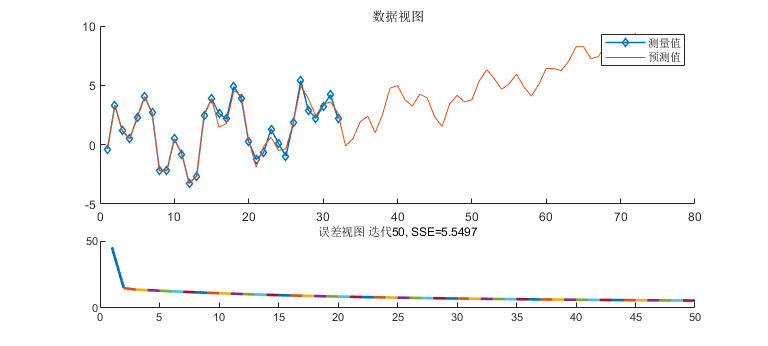

Adaptive Filter
Script by AD1394@XJTU
自适应滤波法的时间序列预测, 对迭代进行动态可视化
对周期型数据更有效
自适应滤波就是用在学习迭代中得到系数的FIR做预测.
预测时, 令观测值X[n] = 对应点预测值Y[n]. 需要手动指定FIR阶数
学习是 weight 滑窗每走一格学一次, 从 n_filterOrder 到 n_sampleCount 称学一轮
因而, 样本靠后的数据(对当前轮数的预测)影响更高.
数据格式:
时间序列的输入数据 sample 和预测 y_hat 是列向量,
权重 weight 是行向量. 如果不是, 则进行转换.
History:
[rev0.1.3] 2 Feb. 2021:
更改交互方式;
增加了测试例子;
[rev0.1.2] 2 Feb. 2021:
移除信号来源选择的交互;
更新绘图语句;
更改循环中检查逻辑;
[rev0.1.1] 1 Feb. 2021:
建立文档;
备份;
6 Sept., 2020:
实现功能;
Contents
数据准备
clc;
close all;
fprintf('自适应滤波法的时间序列预测\n\n');
t = 0:.08:2.5;
pix2 = 6.283185307179586;
sample = 2.*sin(pix2 * t) + 2.*sin(pix2 * 3.*t) + .8.*randn(size(t)) + t;
n_sampleCount = length(sample);
if size(sample, 1) == 1, sample = sample'; end
自适应滤波法的时间序列预测
可视化
f = figure('Name','自适应滤波', 'Units','normalized', 'Position',[.5 0 .5 .4]);
f.Visible = 'off';
axData = subplot(3,1,[1 2]);
axData.NextPlot = 'add'; title(axData, '数据视图');
axError = subplot(3,1,3);
axError.NextPlot = 'add'; title(axError, 'SSE误差');
plot(axData, sample, '-d', 'LineWidth', 1.1, 'MarkerSize', 5);
n_filterOrder = 15;
n_succPredict = 40;
(可选)指定初始权重
weight = ones(1,n_filterOrder) / n_filterOrder;
k= 1/n_filterOrder;
atten = max(abs(sample));
atten = max(atten, 1)^2;
k = k/atten;
通过迭代优化权重
maxIter = 50;
convFailCount = 0;
convWarningThreshold = 3;
sampleRange = max(sample) - min(sample);
sseThreshold = n_sampleCount*(0.1 * sampleRange).^2;
iterAnimPause = 0.5;
y_hat = zeros(n_sampleCount + n_succPredict, 1);
y_hat(1:n_filterOrder) = sample(1:n_filterOrder);
err = zeros(n_sampleCount, 1);
sse_log = zeros(1, maxIter);
p_yhat = plot(axData, y_hat);
legend(axData,'测量值','预测值');
fprintf('开始迭代：请查看图形窗口\nGen\tSSE\n');
iter = 1;
for t = n_filterOrder + 1 : n_sampleCount
y_hat(t) = weight * sample(t-1:-1:t-n_filterOrder);
err(t) = sample(t) - y_hat(t);
weight = weight + 2*k*err(t).*sample(t-1:-1:t-n_filterOrder)';
end
for t = n_sampleCount + 1 : n_sampleCount + n_succPredict
y_hat(t) = weight * y_hat(t-1:-1:t-n_filterOrder);
end
sse_log(1) = dot(err,err);
fprintf('%d\t%.4f\n', iter, sse_log(iter));
for iter = 2:maxIter
for t = n_filterOrder + 1 : n_sampleCount
y_hat(t) = weight * sample(t-1:-1:t-n_filterOrder);
err(t) = sample(t) - y_hat(t);
weight = weight + 2*k*err(t).*sample(t-1:-1:t-n_filterOrder)';
end
for t = n_sampleCount + 1 : n_sampleCount + n_succPredict
y_hat(t) = weight * y_hat(t-1:-1:t-n_filterOrder);
end
sse_log(iter) = dot(err,err);
p_yhat.YData = y_hat;
title(axError, sprintf('误差视图 迭代%d, SSE=%.4f', iter, sse_log(iter)));
plot(axError, [iter-1 iter],[sse_log(iter-1) sse_log(iter)], 'LineWidth',2);
fprintf('%d\t%.4f\n', iter, sse_log(iter));
drawnow limitrate;
if sse_log(iter) > sseThreshold
warning('SSE过大。检查数据噪声/依赖代数/学习率？');
elseif sse_log(iter) < 0.01 * sseThreshold
if input('SSE已经足够小, 是否结束训练? [Y/N]:', 's') == 'y'
break;
else
figure(f);
end
end
if sse_log(iter) > sse_log(iter-1)
convFailCount = convFailCount + 1;
if convFailCount > convWarningThreshold
convFailCount = 0;
k = k/2;
warning('k halved');
end
elseif sse_log(iter-1) - sse_log(iter) < 0.002 * sseThreshold
break;
if input('SSE变化量已经足够小, 是否结束训练? [Y/N]:', 's') == 'y'
break;
else
figure(f);
end
end
end
fprintf('\n学习结束, 历经%d轮, 残差%.4f\n', iter, sse_log(iter));
figure(f);
开始迭代：请查看图形窗口
Gen SSE
1 45.3391
2 14.8527
3 13.7237
4 13.3402
5 12.9091
6 12.4855
7 12.0851
8 11.7086
9 11.3542
10 11.0203
11 10.7055
12 10.4084
13 10.1279
14 9.8628
15 9.6122
16 9.3750
17 9.1505
18 8.9377
19 8.7360
20 8.5446
21 8.3629
22 8.1903
23 8.0263
24 7.8703
25 7.7218
26 7.5804
27 7.4457
28 7.3173
29 7.1949
30 7.0780
31 6.9664
32 6.8598
33 6.7579
34 6.6604
35 6.5672
36 6.4779
37 6.3924
38 6.3105
39 6.2320
40 6.1568
41 6.0845
42 6.0152
43 5.9487
44 5.8847
45 5.8233
46 5.7643
47 5.7075
48 5.6529
49 5.6003
50 5.5497
学习结束, 历经50轮, 残差5.5497
